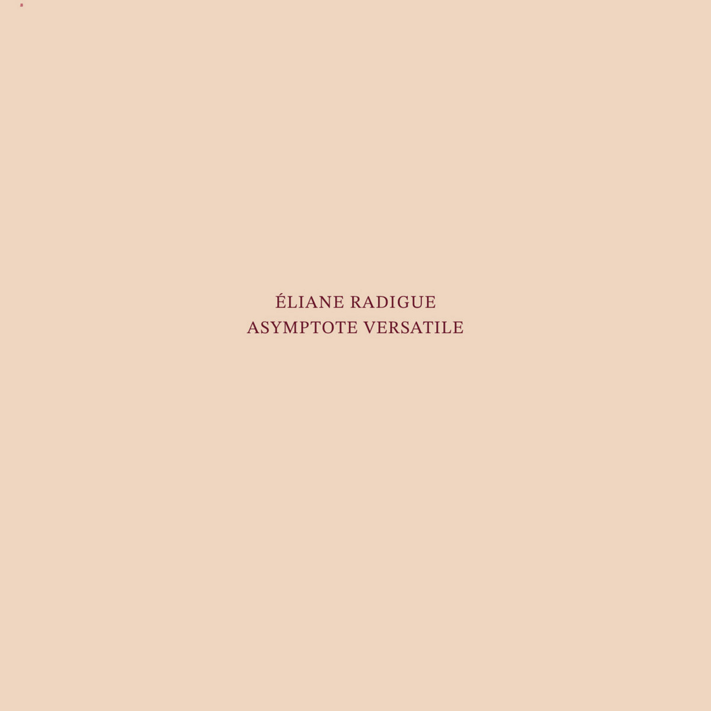

Éliane Radigue - ASYMPTOTE VERSATILE (1963-64)

Track Listing
01 Asymptote Versatile
Catalog Number AMGEN 012
Release Date October 20, 2025
Record Label Amgen
Format CD
Welsh improviser Rhodri Davies is one of the most prominent musicians associated with the London reductionist school active at the turn of the century. He's collaborated with everyone from David Toop to Derek Bailey, and here, on this lavish CD released via his very own Amgen imprint, he convenes a wonderful ensemble to perform the oldest surviving composition of France's legendary Éliane Radigue. According to musician and curator Julia Eckhardt, Asymptote Versatile "consists of a collection of transparent acetate sheets which have to be combined by layering them over each other in order to become a playable score. Since its release back in October, it has quickly become one of our favorite pieces of Radigue's, and one of our favorite releases of the year. A must-have for any fan of microtonal drone composition.